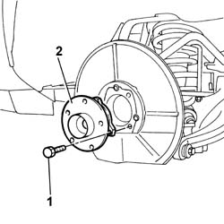

4450D10 Rear wheel HUB, left or right - R.R. with wheel removed
- Path
- Procedures > 44 SUSPENSION AND WHEELS > 4450 HUBS AND WHEELS > 4450D REAR WHEEL HUBS > 4450D10 Rear wheel HUB, left or right - R.R. with wheel removed
- Kind
- repair procedure (removal / refitting; the operation number is the code)
- Applies to
- all engines; all production periods
- Interactive page
- https://sloeber94.github.io/elrnDB-lThss/en/#/180290
Applies to: all engines; all production periods
 Removing
Removing
 Refitting
RefittingSee in Op. 7040B10 LOAD CARRYING COMPARTMENT LINING - R.R.
See in Op. 7040B17 Luggage compartment/load platform side trim flap (one) - Replace
See in Op. 7040B13 Luggage compartment/load platform SIDE LINING - R.R.
See in Op. 7055B43 REAR WHEEL ARCH LINER (one), left or right - R.R.
See in Op. 4440K30 LEFT OR RIGHT REAR INTELLIGENT SUSPENSION SHOCK ABSORBER (ONE) - R.R.
See in Op. 3310B48 REAR BRAKE DISC (one), left or right - R.R.
- Release the A.B.S. sensor from the housing.
1. Undo the bolts fixing the hub to the stub axle.
2. Remove the rear wheel hub from the housing in the stub axle.

Applies to: all engines; all production periods
Refitting
Removing- Fit the rear wheel hub in the housing in the stub axle.
- Tighten the bolts fixing the hub to the stub axle to torque.
 | Value - daNm | Fastening | Component | Ø |
|---|---|---|---|---|
. | 4.5 | Bolt | REAR WHEEL HUB COMPLETE WITH BEARING | M10 |
See in Op. 3310B48 REAR BRAKE DISC (one), left or right - R.R.
See in Op. 4440K30 LEFT OR RIGHT REAR INTELLIGENT SUSPENSION SHOCK ABSORBER (ONE) - R.R.
See in Op. 7055B43 REAR WHEEL ARCH LINER (one), left or right - R.R.
See in Op. 7040B13 Luggage compartment/load platform SIDE LINING - R.R.
See in Op. 7040B17 Luggage compartment/load platform side trim flap (one) - Replace
Topics linked from this page (7)
- 3310B48 REAR BRAKE DISC (one), left or right - R.R.
- 4440K30 LEFT OR RIGHT REAR INTELLIGENT SUSPENSION SHOCK ABSORBER (ONE) - R.R.
- 4450A40 REAR WHEEL GEOMETRY - Check using optical equipment - Includes rear wheel toe-in adjustment if necessary
- 7040B10 LOAD CARRYING COMPARTMENT LINING - R.R.
- 7040B13 Luggage compartment/load platform SIDE LINING - R.R.
- 7040B17 Luggage compartment/load platform side trim flap (one) - Replace
- 7055B43 REAR WHEEL ARCH LINER (one), left or right - R.R.